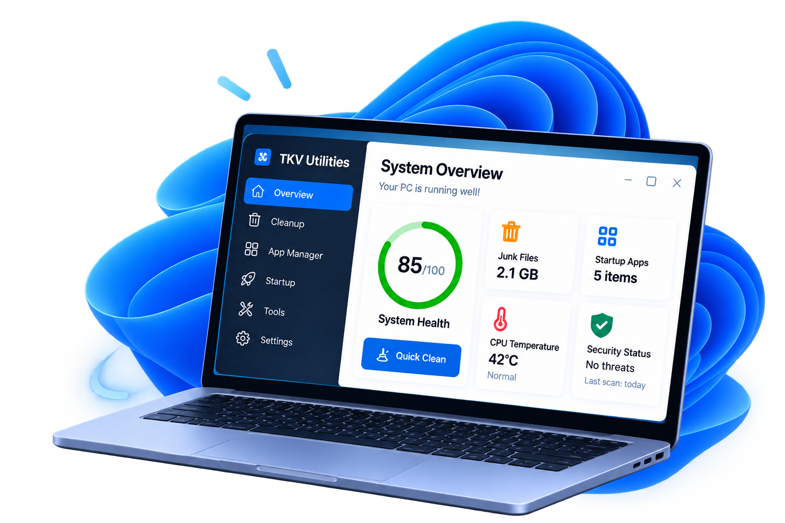

Dọn dẹp thông minh
Xóa rác hệ thống, cache trình duyệt và file tạm an toàn.
Miễn phí — dành cho cộng đồng
TKV Utilities giúp bạn dọn dẹp, quản lý và tối ưu máy tính Windows 10/11 chỉ trong vài phút. Đơn giản, an toàn, không quảng cáo.

Nhỏ gọn · Hiệu quả · An toàn
Xóa rác hệ thống, cache trình duyệt và file tạm an toàn.
Port, tiến trình, khởi động, dịch vụ và ứng dụng.
Treemap, file lớn nhất, lịch sử ổ đĩa.
Docker & WSL, hosts, biến môi trường, phục hồi file.
Vùng bảo vệ cứng, dry-run mặc định, UAC chỉ khi cần.
Dành cho cộng đồng: không phí, không quảng cáo.
Dễ dàng sử dụng
Giải nén zip portable, mở tkv.exe — không cần cài đặt.
Xem dung lượng, rác có thể dọn và port/tiến trình.
Chọn mục, xác nhận, thực thi. Mọi thao tác vào nhật ký.
Trải nghiệm thực tế
Fluent UI, tiếng Việt / English, chế độ sáng–tối theo hệ thống. Kéo để xem thêm, bấm ảnh để phóng to.
Tải về
Hỗ trợ Windows 10/11, có bản portable. Không quảng cáo, không thu thập dữ liệu.
Cùng xây dựng
TKV Utilities được làm miễn phí cho cộng đồng. Góp ý, báo lỗi hoặc theo dõi cập nhật giúp sản phẩm tốt hơn mỗi ngày.
Câu hỏi thường gặp
Có. Miễn phí cho cộng đồng: không phí, không quảng cáo, không thu thập dữ liệu.
Có. Dry-run bật mặc định; mọi thao tác phá hủy đều xem trước và ghi nhật ký.
Không. Bản Windows là portable: giải nén và chạy tkv.exe.
Bản phát hành có thể chưa ký số. Đối chiếu SHA-256 rồi chọn Run anyway.
Mặc định: %LOCALAPPDATA%\TKV. Gỡ bằng cách thoát app rồi xóa exe và thư mục dữ liệu.